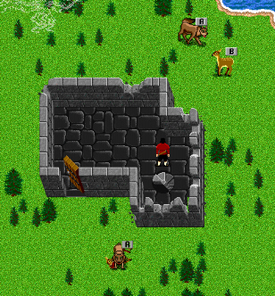
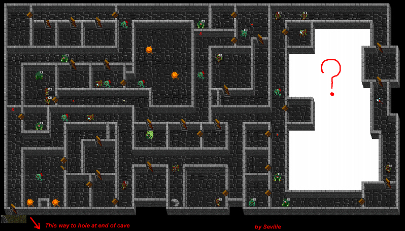

 |
 |
| Back to Aleria. |
| Earthshaker |
| East from Carrena and though the canyon passage lies a little building in disrepair. |
| Passage leads to a backway into the Goblin King's Lair. Rumor has it that the mystery area was a lair that was taken out of the game. |